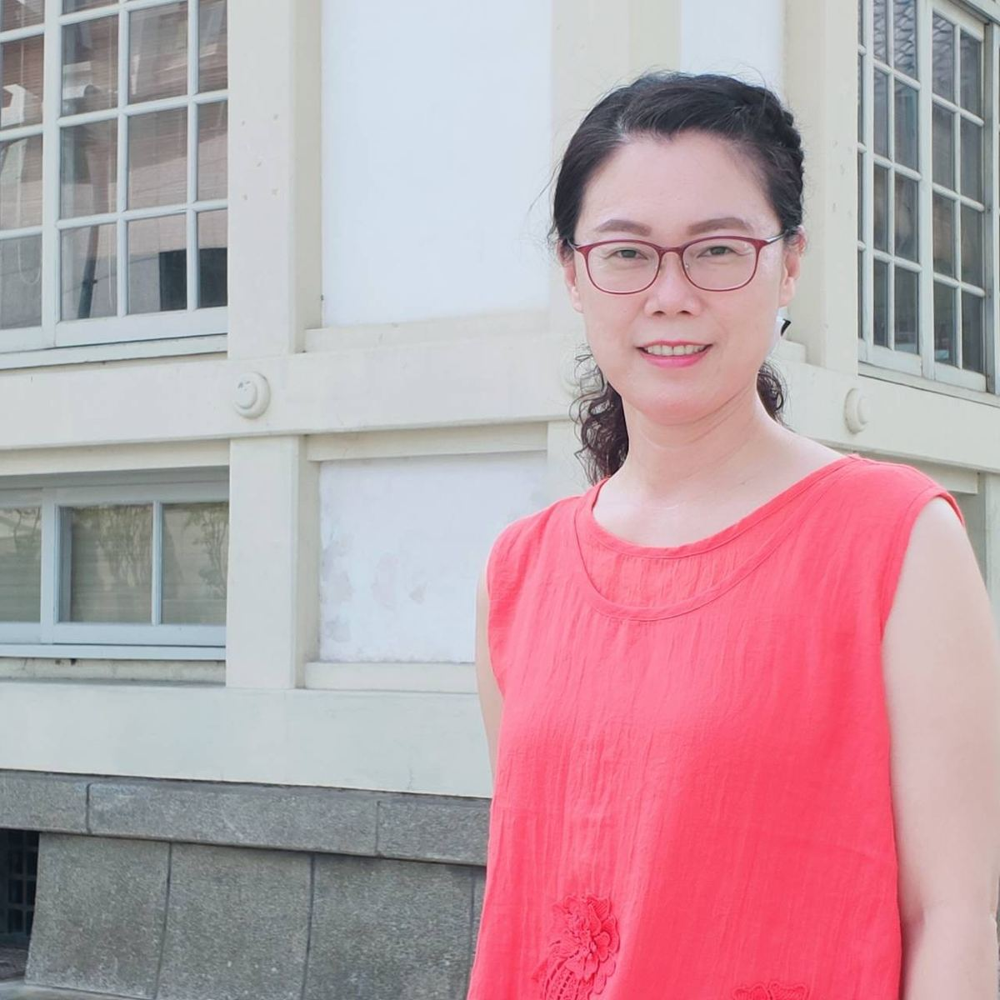

"Choose one task, devote a life, benefit all." 擇一事，做一生，惠眾生
Recorded with My Culture Connect · 與人師教育協會合作錄製
Serving as a principal, I hold fast to my love for education — leading curriculum innovation among teachers, supporting their professional growth, and modeling the practice myself. Real help, real action, real partnership with the teaching staff: that is how we lift student learning.
玟玟擔任校長職務，將秉持對教育的熱愛，推動教師教學革新，提昇教師專業發展與成長；並以身作則，化實際行動及支持協助，服務教師全面落實教育工作，以提升學生學習成效。
A principal's core leadership task is to help teachers improve their craft. I think of the role as that of a lead teacher — bringing my own training in qualitative research and action research into a working dialogue with classroom practice, hoping to model what proactive professional development can look like.
校長領導核心任務之一，即在協助教師改進教學，建構典範學習，提升教學成效，並以成為「首席教師」的角色自許。個人教學研究專長為「質性研究」，以教學實務與教學理論作結合，使其發揮較大的效益，嘗試結合行動研究，藉此希冀提供良性的示範，帶動現場教師主動發展專業的可能性。
I have served as a principal since February 2012 — first at Jianxin Elementary (2012–2015), then at Tongfang Elementary (2015–2022), and now at Cundong since August 2022. Across those years, our schools have completed major renovations: classrooms rebuilt and reinforced, new gates and gatehouses, a refreshed library with its reading station, comprehensive site redesigns.
玟玟自 101 年 2 月始擔任國小校長，無論是教育部、縣府計畫亦或是自發性活動，承辦上級長官交辦業務、訪視、評鑑等之外，校舍拆除重建、新建、補強、校門或守衛室完成、圖書室設施設備更新（共讀站、書福悅讀）、校園整體規劃改建等，圓滿完成。感謝教育部國教署、縣府經費補助、設計監造單位及施工廠商的用心，感謝歷任學校教職員工共體時艱，並感謝社區人士和家長的體諒。
At each of my three schools, I have actively advanced Reading, English, and International Education. We have been a designated school for the Ministry's Digital-Assisted Subject Reading programme, the Ministry's English Teaching Innovation programme, an ISA-certified school, and a host campus for both ETA Co-Teachers and Foreign English Teachers (FETs).
玟玟在校長任內亦致力推動「閱讀教育」、「英語教育」及「國際教育」，為教育部數位輔助學科閱讀計畫辦理學校、教育部英語教學創新方案辦理學校、ISA 認證學校、引進 ETA 協同教師及 FET 外籍英語教師辦理學校。
At Cundong, alongside reading, English, and international education, we place enormous weight on environmental education and a sustainable campus. In 2023 we earned the U.S.–Taiwan Eco-Schools Bronze certification; in 2024, Silver; at the close of 2025, the highest honour — the Green Flag.
在村東，除了積極持續發展「閱讀教育」、「英語教育」、「國際教育」，環境教育及永續校園我們十分重視，112 年通過臺美生態學校銅牌、113 年銀牌，114 年底拿到綠旗認證殊榮；亦通過彰化縣政府閱讀教育、國際教育、藝術領域、環境教育、健康促進等揚帆及啟航學校認證。
We work hard to create platforms and opportunities for our children. Among our proudest are the Unicycle Squad — three years running, county girls' team champions — and the Ten Drum Troupe, which has represented our county at national competition and is regularly invited to open ceremonies. Endless gratitude to the coaches, the students, the staff who make all this possible.
學校積極為孩子們創造更多機會與舞台，獨輪車蟬聯第三年女生組團體總錦標第一名，十鼓隊曾代表本縣參加全國賽，屢屢受邀參加活動的開幕式表演，為校、為縣爭光。感恩教練和學生的付出，本人引以為榮。
"Choose one task, devote a life, benefit all" — that is how I would describe my own vocation in education. A principal's job is to model what they ask of others, and to make every decision in the interest of the school and its students. Deep thanks to the leaders who lifted me, the colleagues who have looked out for me, and to my family for their steady support along every step of this road.
「擇一事，做一生，惠眾生」是玟玟對於教育志業的註解。擔任校長唯有以身作則，為學校、為學生利益做最大的考量。常懷感恩之心，一路走來，感恩長官的提攜及同事的照顧；感恩家人的支持與鼓勵，讓我在校長之路「全力以赴」。